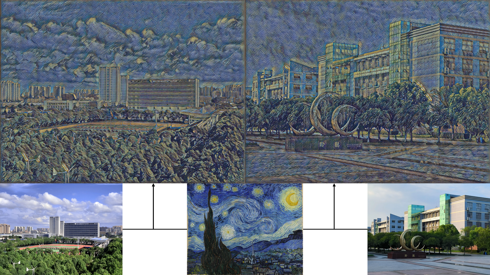

绪论
1.1 课题研究背景及意义
随着信息技术的高速发展，当今社会信息的呈现方式日益多样化，图像已经成为一种至关重要的信息载体。人们的手机、相机等设备都可以获取大量的图像数据，自然而然地也产生了对图像数据处理的需求。计算机技术、数字图像处理技术以及深度学习技术的发展为图像处理领域的研究提供了强大的技术支持。
图像风格迁移技术的目的是将一张内容图像从原始风格转换成特定图像的风格。 图像风格是指一幅图像所呈现出的视觉特征，如色彩、纹理、笔触等。不同的色彩搭配能够营造出迥异的氛围与情感基调，如梵高的《星月夜》中浓郁且对比强烈的蓝、黄色彩，赋予画面神秘而奇幻的风格；纹理体现图像表面的细腻质感，像古典油画中厚重的笔触纹理、木质材料的天然木纹纹理等；笔触反映了创作者的绘画手法，细腻流畅或粗犷豪放的笔触能传达出截然不同的艺术韵味，例如中国传统水墨画中灵动多变的笔墨笔触。
图像内容指的是一幅图像所描绘的具体对象、场景及其布局结构。内容包括图像中的人物、物体、风景等实体元素以及这些元素之间的空间关系与组合方式。这些元素共同传达出画面的主题，也是图像语义理解的关键所在。

图1.1风格图像迁移示例
在图像风格迁移的过程中，图像的风格与内容具有一定程度的相对独立性，所以能够将一种风格图像的风格特征抽取出来，并迁移至具有不同内容的另一幅图像上。如图 1.1所示，将世界名画梵高的《星月夜》画作与校园的景色相融合，既保留原内容中校园建筑和道路主体，同时融入了梵高的风格元素，展现全新风格魅力的视觉效果。
在艺术创作领域上，传统艺术创作受限于艺术家个人的技能、风格和创作工具，图像风格迁移技术的出现打破了艺术风格之间的壁垒，也降低了艺术创作的门槛。人们可以利用这一技术将富含特色的艺术绘画作品的风格应用到自己的照片中，创造出独特的艺术效果和氛围。例如，将自己的自拍照转化成素描画作，或者将现代摄影作品转化为古典油画风格或者山水画风格，或者将抽象画风应用到纪录照片上，拓展艺术创作的可能性，使艺术创作更加普及化、大众化[1][2][3][4]。在影视制作中，图像风格迁移可以用于特效制作，例如将现实拍摄下的场景转化为奇幻的动画风格[5][6]，或者将拍摄历史场景还原为特定的历史时期风格，增强影视作品的视觉效果和艺术感染力的同时降低制作成本。在医学上，医学图像通常具有高度复杂的结构和丰富的细节信息，通过风格迁移生成的图像既保留了图像的风格，又保留了图像的内容,使得生成的图像更具真实感和可信度[7]。此外，图像风格迁移技术还可以应用于文化创意产业领域。以戴娟的相关实践为例[8]，她运用图像风格迁移算法，通过将不同艺术风格与大熊猫形象有机融合，不仅为传统的文创设计赋予了崭新的视觉呈现形式，同时也拓展了文化周边产品的文化内涵与艺术感染力，进一步彰显了图像风格迁移算法在各领域应用中的潜力。
1.2 国内外研究现状
目前，图像风格迁移算法的研究可以分为传统风格迁移和基于神经网络的风格迁移两个发展阶段。从图像风格迁移任务实现的维度上来看，又可以分为三个阶段，分别是固定内容的固定风格迁移、任意内容的固定风格迁移和任意内容的任意风格迁移。
1.2.1 传统风格迁移方法
在深度学习兴起之前，传统的风格迁移方法主要基于手工设计算法和人工特征工程等计算机图形学知识实现风格迁移，比如通过数学建模或拼接现有图像的小块补丁进行融合内容与风格特征。这个阶段的图像风格迁移技术局限在固定内容图像或任意内容图像迁移
到固定的风格。
固定的内容图像迁移到固定的风格主要通过传统图像处理技术实现。传统的图像处理技术中，基于滤波的方法有利用高斯滤波、拉普拉斯滤波等线性滤波器提取图像的低频轮廓和高频细节，试图通过调整不同频率成分的分布来模拟风格特征；基于纹理合成技术则通过统计风格图像的纹理模式(如灰度共生矩阵、局部二进制模式等)，在内容图像上复制类似的纹理结构。这些传统处理方法显然需要特殊情况特殊处理，要求研究人员针对特定的内容和风格进行定制分析。例如，在处理风景图像的风格迁移时，可能需要设计专门捕捉云层纹理的滤波器；而在处理人物肖像时，则需调整纹理模板以适配面部特征。这种人工设计的方式暴露出两大核心缺陷：一方面，算法的泛化能力非常弱，每一种新的内容或风格组合都需要重新设计处理流程，不能形成通用的解决方案；另一方面，传统方法仅仅解读图像的浅层视觉特征(如颜色分布、边缘方向、纹理重复模式等)，完全缺乏对图像深层语义的理解。
有的研究人员尝试从不同角度挖掘风格图像中的纹理基元，通过拼接重组生成新图像。Efros等人提出了通过对目标图像的风格纹理进行拼接和重组操作，利用纹理元素之间的组合关系，最终合成全新风格的图像[9]。他们的方法能较好地复制风格图像的重复纹理(如砖墙、布料)，但在处理非周期性纹理(如绘画笔触)时，容易出现明显的拼接痕迹。
研究人员们还试图通过模拟绘画的物理过程实现风格迁移。Hertzmann等人提出了图像类比框架进行图像纹理合成，通过建立内容图像与风格图像的局部块对应关系，将风格图像的色彩分布、边缘方向等统计特性迁移到内容图像，可以合成各种艺术绘画风格[10]。
然而这些传统方法存在显著的缺陷，它们本质上是人工进行设计不同风格的特征表达，只是提取了图像的底层特征，未能表达图像的高层抽象特征。当遇到颜色和纹理复杂的图像时，生成的图像风格效果粗糙，不能满足如今高质量图像的需求。
1.2.2 神经网络风格迁移方法
随着深度学习技术的逐渐发展以及人们对图像质量要求的不断攀升，这些传统方法所固有的局限性逐渐暴露出来。在特征提取这一关键层面，传统方法局限于运用相对简单的技术手段对图像底层特征的获取，仅聚焦于图像的基本像素信息、颜色直方图等初级特征。这种情况下图像所蕴含的高层抽象特征，如图像所传达的语义信息、物体之间的逻辑关系等深层次内涵，难以精准捕捉。正是因为传统方法缺乏对复杂特征的深度处理能力，所以此类传统方法所生成的图像在风格呈现效果上显得颇为粗糙，图像可能出现纹理模糊、风格杂糅不自然等问题，无法满足在视觉美感、语义准确性等方面的严苛需求。深度学习技术凭借自身强大的自动特征学习本领，依托海量的数据支撑以及复杂的神经网络架构，能够深入挖掘图像中的深层次信息，精准分离图像的内容与风格特征，并通过复杂的模型架构与训练机制，实现两者的有机融合，进而生成高度逼真、风格独特的图像[11][12]。
早期的基于神经网络的固定内容的固定风格迁移方法将生成图像作为可优化变量。这样的风格迁移方法局限于较高的计算复杂度，而且固定输入的设定导致其缺乏对动态内容或风格的泛化能力。2015年，Gatys等人提出了基于卷积神经网络的图像风格迁移算法，将生成图像视为优化变量，通过预训练卷积神经网络提取的内容特征与风格特征，构建内容和风格双损失函数推进像素优化，首次证明了神经网络提取的深度特征可以有效分离内容与风格，为后续研究奠定了理论基础[13]。
每次生成图像都需要对像素值进行数百次迭代优化的生成方式已经无法满足效率需求，研究人员们着手研究基于神经网络的任意内容的固定风格迁移方法。迁移方法基于深度卷积神经网络，通常采用编码器-解码器架构。编码器负责提取内容图像的语义特征，将图像数据变得抽象；解码器则将编码后的语义特征与目标风格信息结合，恢复图像内容生成风格化图像。
任意内容图像的固定风格迁移将优化目标从图像空间转移到网络参数空间。2016年，斯坦福大学李飞飞团队针对Gatys方法的效率瓶颈，提出了基于感知损失的图像风格迁移方法，使用感知损失代替原损失，设计了一个包含残差连接的深层网络，直接以内容图像到风格图像作为训练数据，通过训练图像变换网络参数生成直接逼近最优解图像[14]。基于预训练模型的风格迁移算法在训练时，首先固定预训练网络模型的参数，然后仅对转换网络的权值进行更新。通过随机梯度下降等优化算法，在大规模内容图像数据集上进行迭代训练，使转换网络学习从任意内容图像到目标风格的映射关系。训练完成后，对于新的内容图像，只需将其输入训练好的网络，通过前向传播即可快速生成风格化结果，无需像早期方法那样对单张图像进行耗时的迭代优化。
后续还针对Gatys 提出的方法进行了诸多改进。Li等人并未使用特征映射的Gram矩阵来表征风格，而是证实了其他几种损失函数同样能够有效地完成任务。其中，均值方差表示法尤为突出，相较于Gram矩阵表示，它更为紧凑，且性能表现相近[15]。此外，风格还有其他多种表示形式，诸如直方图损失[16]、MRF损失[17]以及CORAL损失[18]。Dumoulin等人提出利用条件实例归一化来适配每种风格。该方法通过调整特征通道的权重，成功实现对多种不同风格的表示[19]。Zhu等人提出了循环对抗生成框架，通过两个生成器学习两种图像域的映射，并使用两个判别器尝试区分生成图像和真实图像，在风格转移和季节转移方面彰显了该方法的优越性[20]。与此同时，Der-Lor Way等人在动漫风格迁移任务的基础上，提出了一种新颖的动漫风格迁移算法，达到了不错的图像风格迁移效果[21]。它们的算法针对图像的前景与背景在风格呈现上的差异，进行不同的处理策略，例如，对于动漫人物作为前景，人物的细节和风格需要更细致地刻画，而画面的背景可能更注重整体氛围的营造和与前景的融合。然而，这些方法无法推广应用于新的风格图像。
面对新风格任务时上述的模型需重新训练。这样每一种风格一个模型的情况在实际应用中成本极高。为了进一步提高图像风格迁移的灵活性和通用性，研究人员开始探索任意内容的任意风格迁移技术。
在这个阶段中，Huang等人提出了新颖的归一化思想，他们通过对齐内容图像与风格图像在预训练VGG-16网络多层特征空间的均值与方差统计量，将风格迁移过程转化为特征分布的匹配问题。虽然该方法能够处理任意新风格，但严重依赖VGG-16网络对图像进行编码，同时需要相应网络对特征进行解码，无法利用更先进的主干网络，这给模型的控制带来了困难[22]。Chen等人提出基于图像块的局部风格匹配，引入了风格交换来处理任意风格迁移。该方法将内容图像和风格图像分割为重叠的图像块，通过K近邻搜索在风格图像中找到与内容块最相似的补丁，然后将其替换到内容图像中，但是处理的速度非常缓慢[23]。Zhang等人提出一个多风格生成网络MSG-Net，设计CoMatch层匹配风格图像的Gram矩阵，捕捉特征之间的相关性。该方法整体采用类似U-Net的编码器-解码器框架，并且跳跃连接中引入风格调节模块，在风格实时迁移中实现了高质量的输出[24]。
再后来，基于 Transformer的风格迁移算法利用自注意力机制和交叉注意力机制进行风格迁移，其中自注意力机制旨在捕捉图像内部的长距离依赖关系，而交叉注意力机制则用于融合内容图像和风格图像的特征，进而实现风格迁移。2022年，Jianbo Wang等人将自然语言处理中的Transformer架构引入风格迁移，提出了一种新颖的STyle TRansformer(STTR)网络，在风格迁移结果上具有令人满意的有效性和效率[25]。他们的网络将内容和风格图像分解为视觉标记，以实现细粒度的风格转换。网络中用到了两种注意力机制，其中自注意力机制用于编码内容和内容标记，然后在内容和风格标记之间融入交叉注意力机制。与其他一些基于传统卷积神经网络的方法相比，STTR的创新点在于其采用视觉标记化和双注意力机制，突破了传统全局特征转换的局限。
2023 年，Chiyu Zhang等人提出了一种基于Transformer的新方法用于图像风格迁移，并引入基于Canny算子的边缘检测分支，可以明显增强内容细节。与其他基于Transformer的图像风格迁移方法相比，该方法能够有效避免因过度渲染风格特征而生成模糊结果[26]。颜明强等人提出了一个基于自注意力机制的渐进式流形特征映射模块(MFMM-AM)，用于协调一致地匹配相关内容和风格流形之间的特征；然后通过在图像特征空间中应用精确直方图匹配来实现风格和内容特征图的高阶分布匹配，减少了图像信息的丢失[27]。
到目前，纪宗杏等人提出了一种新型的基于双路视觉 Transformer的图像风格迁移方法Bi-Trans，对内容图像域和风格图像域进行独立编码，通过交叉注意力机制与条件实例归一化将内容图像标定至目标域风格，从而生成风格化图像[28]。
1.3 论文研究内容
本文的研究主要针对基于MetaNet网络风格迁移算法存在的局限性进行改进，提出的改进方法提升原来的图像风格迁移效果。主要研究内容和创新点如下：
(1)在特征提取方面，本研究采用预训练的VGG卷积神经网络作为特征提取模块，对比VGG-16与VGG-19两种卷积神经网络模型在风格特征提取中的差异，发现深层网络结构对风格迁移的影响机制。
(2)本研究对元学习器与图像转换网络进行双重结构增强，并尝试引入新的超参数以强化模型的能力。元学习器中添加注意力机制增强处理特征信息的能力，同时改进图像转换网络的结构，以优化图像风格迁移的效果。
(3)本研究使用COCO数据集和WikiArt数据集对模型进行训练，联合内容损失函数和风格损失函数以优化模型参数。后续对元网络与现有的图像风格迁移算法进行对比分析，评估模型生成图像的质量和效率，展示本研究方法的优越性。
1.4 论文结构安排
本文共五章，结构安排如下：
第一章，绪论。本章首先简要介绍论文研究内容的背景及意义，接着阐述了图像风格迁移领域的国内外研究现状，最后介绍本文的研究内容和文章结构。
第二章，相关理论基础。本章简单介绍卷积神经网络和编码器-解码器架构，为本研究模型的搭建打下基础。接着对本研究进行可行性分析，证明本研究的有效性。
第三章，基于改进的MetaNet风格迁移算法研究。本章首先对原始模型MetaNet进行原理分析，接着阐述本章提出的改进方法，包括去除对图像尺寸的限制、改进的图像转换网络结构设计、添加超参数配置和注意力机制等。
第四章，实验与评估。本章主要介绍本文改进方法的训练环境和配置参数，并将改进的算法和现有的一些风格迁移算法进行实验对比，通过定性和定量分析本文改进方法在风格迁移任务上的优越性。
第五章，总结与展望。本章对本文的研究进行总结，并对后续研究方向展开探讨。
[1] 董心悦,傅鹏.基于改进生成对抗网络的人脸图像风格迁移方法[J].鄂州大学学报,2025,32(02) 94-97.
[2] 熊文楷.基于深度学习的中国画风格迁移[J].科技与创新,2023(13) 176-178.
[3] Liao M, Huang F. Deep Learning‐Based Application of Image Style Transfer[J]. Mathematical roblems in Engineering, 2022 1-10.
[4] 胡琦瑶,刘乾,彭先霖,张翔,彭盛霖,范建平.SN-CL GAN 基于谱归一化的中国传统山水画风格迁移方法[J].西北大学学报（自然科学版）,2025,55(1) 63-74.
[5] 刘欢.基于改进生成对抗网络的图像动漫风格迁移研究[D].哈尔滨师范大学,2023.
[6] 蔡建禄.基于深度学习的多风格场景卡通化与图像风格化算法研究[D].浙江工商大学,2024.
[7] 赖灿芸.基于风格迁移的图像生成模型及其在医学领域的应用[D].浙江工商大学,2024.
[8] 戴娟.风格迁移算法在大熊猫文创设计中的运用[J].鞋类工艺与设计,2024,4(18) 192-194.
[9] Alexei A. Efros, William T. Freeman． Image Quilting for Texture Synthesis and Transfer[C]//Computer Graphics.Computer Science Division, University of California, Berkeley, Berkeley, CA 94720 USA, 2001 341-346.
[10] Hertzmann A, Jacobs E C, Oliver N, et al. Image Analogies[C]// roceedings of SIGGRA H. 2001 327-340.
[11] 镇家慧,罗明俐.基于卷积神经网络的图像风格变换[J].数码设计（下）,2021,10(6) 43.
[12] 廉露,田启川,谭润,等.基于神经网络的图像风格迁移研究进展[J].计算机工程与应用,2024,60(09) 30-47.
[13] Gatys L, Ecker A, Bethge M. A Neural Algorithm of Artistic Style[J].Journal of Vision, 2016, 16(12) 326-326.
[14] Johnson J, Alahi A, Fei-Fei L. Perceptual Losses for Real-Time Style Transfer and Super Resolution[C]//Computer Vision–ECCV 2016 14th European Conference, Amsterdam, The Netherlands, October 11-14, 2016, roceedings, art II 14. Springer International Publishing, 2016 694-711.
[15] Li C, Wand M. Precomputed Real-Time Texture Synthesis with Markovian Generative Adversarial Networks[C]//Computer vision–ECCV 2016 14th European conference, amsterdam, the netherlands, October 11-14, 2016, proceedings, part III 14. Springer International ublishing, 2016 702-716.
[16] Risser E, Wilmot P, Barnes C. Stable and Controllable Neural Texture Synthesis and Style Transfer Using Histogram Losses[J]. CoRR, 2017.
[17] Li C, Wand M. Combining markov random fields and convolutional neural networks for image synthesis[C]//Proceedings of the IEEE conference on computer vision and pattern recognition. 2016 2479-2486.
[18] Peng X, Saenko K. Synthetic to real adaptation with generative correlation alignment networks[C]//2018 IEEE Winter Conference on Applications of Computer Vision (WACV). IEEE, 2018 1982-1991.
[19] Dumoulin V, Shlens J, Kudlur M. A Learned Representation For Artistic Style[J]. CoRR, 2016.
[20] Zhu J Y, Park T, Isola P, et al. Unpaired Image-to-Image Translation Using Cycle Consistent Adversarial Networks[C]// roceedings of the IEEE international conference on computer vision. 2017 2223-2232.
[21] Way D L, Chang W C, Shih Z C. Deep Learning for Anime Style Transfer[C]// Proceedings of the 2019 3rd international conference on advances in image processing. 2019 139-143.
[22] Huang X , Belongie S. Arbitrary Style Transfer in Real-time with Adaptive Instance Normalization[C]// roceedings of the IEEE international conference on computer vision. 2017 1501-1510.
[23] Chen Q T, Schmidt M. Fast atch-based Style Transfer of Arbitrary Style[J]. CoRR, 2016.
[24] Zhang H, Dana K. Multi-style Generative Network for Real-time Transfer[M/OL]//Lecture Notes in Computer Science,Computer Vision – ECCV 2018 Workshops. 2019 349-365.
[25] JianBo Wang, Huan Yang, JianLong Fu, et al. Fine-Grained Image Style Transfer with Visual Transformers[C]//Computer vision – ACCV 2022, art 3 16th Asian conference on computer vision (ACCV), December 4-8, 2022, Macao, China. 2023 427-443.
[26] Zhang C, Yang J, Dai Z, et al. Edge Enhanced Image Style Transfer via Transformers[J]. 2023 105-114.
[27] 颜明强,余鹏飞,李海燕,等.语义风格一致的任意图像风格迁移[J].计算机科学,2023,50(07) 129-136.
[28] 纪宗杏,贝佳,刘润泽,等.基于双路视觉 Transformer 的图像风格迁移[J].北京航空航天大学学报,2024 1-12.